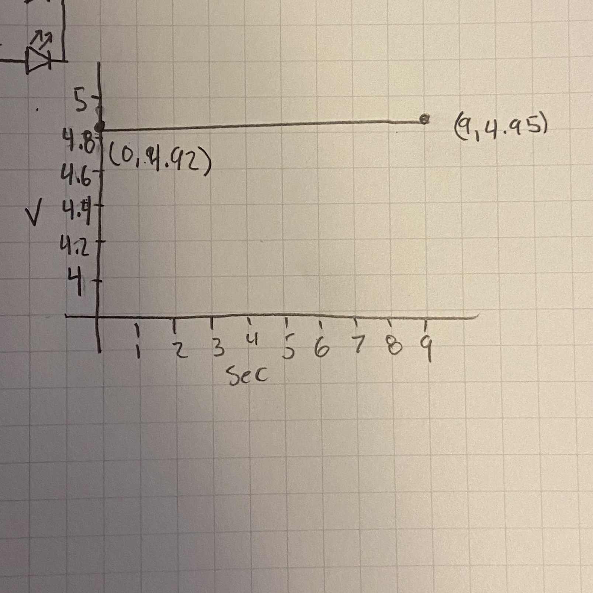

On the left you can see a gif of the assignment working. This is pre calibrated and starts with my finger on it to warm it up. Once I let go you can see it slowly fade down from white to red to yellow to blue then finally off. This shows us that the thermister is getting cooler. If I were to put my finger back on the thermister then the lights would slowly fade back up in the reverse order as it warmed.
On the right you can see a still picture of the wires. I tried to make it much cleaner compared to my last assignments. I think that I did a good job, but it does make it hard to see what is going on. Even when I was building it I had to double check I was putting wires where I thought I was.
// Andrew Doty wi24
// HCDE 439
// 1/26/2024
// constants won't change. They're used here to set pin numbers:
const int ledPin0 = 10; // the number of the LED pin
const int ledPin1 = 11; // the number of the LED pin
const int ledPin2 = 12; // the number of the LED pin
const int ledPin3 = 13; // the number of the LED pin
// Variables for calibrating the max, min, average, 25th percentile,
// 75th percentile, and current temp
int max = 0;
int min = 1023;
int mid = 0;
int mid25 = 0;
int mid75 = 0;
int temp = 0;
// Used by the map function to help in debugging which pattern of LEDs
// should be lit
int whichLED = 0;
void setup() {
// open the serial port at 9600 bps, allows us to see output in the console
Serial.begin(9600);
// initialize the LED pins as an output:
pinMode(ledPin0, OUTPUT); //
pinMode(ledPin1, OUTPUT);
pinMode(ledPin2, OUTPUT);
pinMode(ledPin3, OUTPUT);
// Calls the recalibrate function to find max, min, average, 25th percentile,
// 75th percentile, and current temp
recalibrate();
}
// Main loop that the code runs through
void loop() {
// Reads the value at the A0 port
temp = analogRead(A0);
// Maps the current temp to the range of possible led combos
whichLED = map(temp, min, max, 0, 7);
// Prints out information for debugging
Serial.print(temp);
Serial.print(" : ");
Serial.println(whichLED);
// Calls the displayTemp function which takes the current
// temperature and determines which leds to light up
displayTemp(temp);
}
// Based on the input temperature determines which LEDs should light up
void displayTemp(int temp) {
// If the temp is higher than min and at or lower than the 25th percentile
if (min < temp && temp <= mid25) {
// lights up blue LED
digitalWrite(ledPin0, HIGH);
}
// If the temp is between the 25th percentile and average (Inclusive)
if (mid25 <= temp && temp <= mid) {
// Light up yellow LED
digitalWrite(ledPin1, HIGH);
}
// If the temp is between the average and 75th percentile (Inclusive)
if (mid <= temp && temp <= mid75) {
// Light up the red LED
digitalWrite(ledPin2, HIGH);
}
// If the temp is at or higher than the 75th percentile
if (temp >= mid75) {
// Light up white LED
digitalWrite(ledPin3, HIGH);
}
// Add a delay for smoothing
delay(100);
// Turn off all the LEDs (for easy reset)
digitalWrite(ledPin0, LOW);
digitalWrite(ledPin1, LOW);
digitalWrite(ledPin2, LOW);
digitalWrite(ledPin3, LOW);
}
// Recalibrates the min and max using data over the next 10 seconds
void recalibrate() {
// loops through 100 times (100ms each time is 10 seconds total)
for (int time = 0; time < 100; time++) {
// Get the current temp from the A0 port
temp = analogRead(A0);
// Check if temp is new max
if (temp > max) {
// set min
max = temp;
}
// Check if temp is new min
if (temp < min) {
// set min
min = temp;
}
// wait 100 ms
delay(100);
}
// After the loop does some math to find the 25th, 50th, and 75th percentiles
mid = (max + min) / 2;
mid25 = (min + mid) / 2;
mid75 = (mid + max) /2;
}

I limited the current using these resistors becasue I wanted to prevent the LEDs from burning out. As with the last two assignments we know that using a 220 ohm resistor with 5v limits the current enough. So that is what I did for the main LEDs. For the green LED that is always on, I wanted it to be a lot dimmer, I used a 2k ohm resistor to make it a lot dimmer. It still allows for us to easily tell when it is on without being blinded by a bright light.
The values that you might read, if the thermister has zero resistance, is shown in the image above to be 4.94 volts. I chose R1 by looking at the average value that I was reading out in the monitor. It was ranged around 20 only changing by around 10 in either direction. I got this by using the formulas that we were shown in class, then just plugged and chugged. I know this is an appropriate resistance to have because when putting this together I plan on it all having 5v, so if it is less that is fine. I also know that it is appropriate because there is no sensitive devices on this board that I have to worry about. The most sensitive ones are the LEDs which are fine because the current is less than 25 mA.
It can be either R1 or R2 in most cases. The only case you have to worry about is if R2 is zero because then it is not a voltage divider. But since the question is about voltage dividers and it would not be a voltage divider in that case we should be good. But it would be a good idea to add a fixed resistor just for safety. An example could be with though of if R1 is fixed then the ratio changes as R2 changes. The change would approach an asymptote (V) since the equation becomes (R2)/(R1 + R2) * V. This of course breaks down at 0 and is no longer a voltage divider. In the other case where R2 is fixed as R1 increases the voltage out decreases at a fixed rate.

The graph does not change very much because the thermister does not change very much. So notice how the graph starts at 4 and still barely shows a rise in the graph.
You would have to map the values to account for the much broader range in 16 bit. In 10 but there are only 1024 possible values where as in 16 bit there are 65536 possible values. So you would have to map a 0 in 10 bit to be a 0 in 16 bit and a 1023 in 10 bit to be a 65535 in 16 bit. The reason it is one less is because you start from zero in code. The main concern would be loss of resolution when converting from 16 bit to 10 bit, since it can't store as much data.